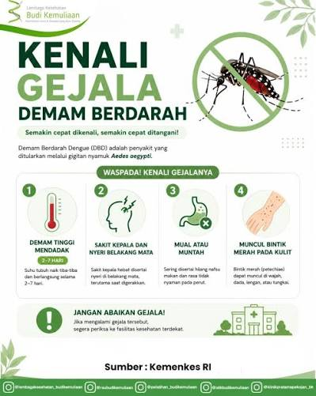

Artikel Kesehatan: Waspada Demam Berdarah (DBD)

Demam Berdarah (DBD) adalah penyakit yang sangat mematikan jika terlambat ditangani. Penurunan demam tidak selalu berarti sembuh, melainkan bisa menjadi awal fase kritis berupa kebocoran pembuluh darah, syok, hingga kegagalan organ. Karena itu, penanganan medis cepat dan pemantauan cairan tubuh sangat krusial untuk menyelamatkan nyawa.